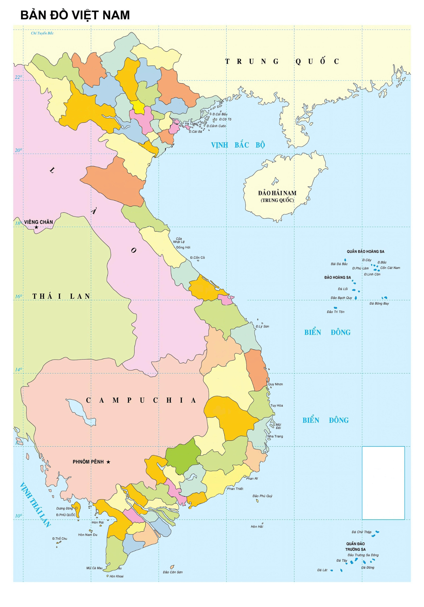

VNFOODS
Mỗi món là một câu chuyện, mỗi đĩa là một hành trình

HÀ
NỘI
LAI CHÂU
ĐIỆN BIÊN
LÀO CAI
SƠN LA
YÊN BÁI
HÀ GIANG
PHÚ
THỌ
CAO BẰNG
TUYÊN
QUANG
BẮC KẠN
THÁI
NGUYÊN
VĨNH
PHÚC
LẠNG SƠN
BẮC GIANG
BẮC NINH
QUẢNG NINH
HẢI PHÒNG
HẢI DƯƠNG
THÁI BÌNH
HƯNG YÊN
NAM ĐỊNH
HÀ
NAM
HÒA BÌNH
NINH
BÌNH
THANH
HÓA
NGHỆ AN
HÀ TĨNH
QUẢNG
BÌNH
QUẢNG
TRỊ
THỪA
THIÊN HUẾ
ĐÀ NẴNG
QUẢNG NAM
QUẢNG
NGÃI
KON TUM
BÌNH
ĐỊNH
GIA LAI
ĐẮK LẮK
PHÚ
YÊN
ĐẮK
NÔNG
KHÁNH
HÒA
LÂM ĐỒNG
NINH
THUẬN
BÌNH THUẬN
BÌNH
PHƯỚC
ĐỒNG
NAI
TÂY
NINH
BÌNH
DƯƠNG
TP.HỒ
CHÍ
MINH
VŨNG
TÀU
LONG AN
ĐỒNG
THÁP
TIỀN
GIANG
BẾN TRE
VĨNH
LONG
TRÀ VINH
AN GIANG
CẦN
THƠ
KIÊN
GIANG
HẬU
GIANG
SÓC TRĂNG
BẠC LIÊU
CÀ
MAU